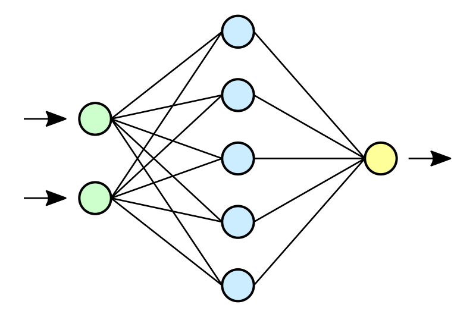
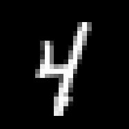
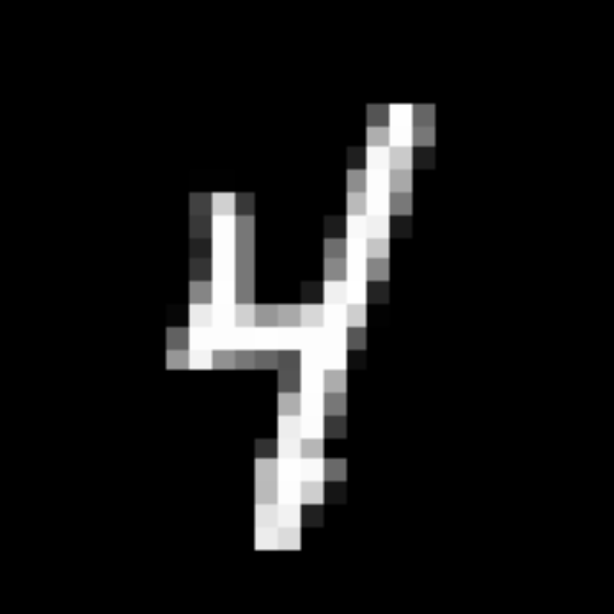
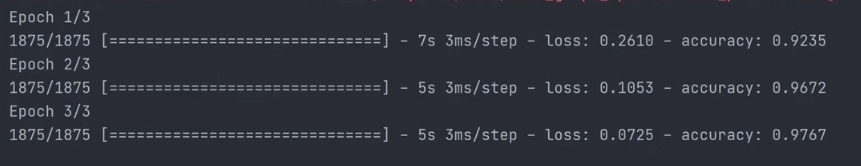
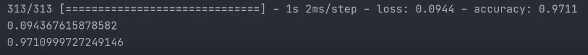

<!DOCTYPE html>
<html lang="hu">

<head>
    <meta charset="UTF-8" />
    <meta http-equiv="X-UA-Compatible" content="IE=edge" />
    <meta name="viewport" content="width=, initial-scale=1.0" />
    <title>Neurális Hálózatok - Tokár Dávid honlapja</title>

    <link rel="preconnect" href="https://fonts.googleapis.com" />
    <link rel="preconnect" href="https://fonts.gstatic.com" crossorigin />
    <link href="https://fonts.googleapis.com/css2?family=Inconsolata:wght@600&display=swap" rel="stylesheet" />

    <link href="https://cdn.jsdelivr.net/npm/bootstrap@5.1.3/dist/css/bootstrap.min.css" rel="stylesheet"
        integrity="sha384-1BmE4kWBq78iYhFldvKuhfTAU6auU8tT94WrHftjDbrCEXSU1oBoqyl2QvZ6jIW3" crossorigin="anonymous" />
    <link rel="stylesheet" href="./altalanos.css" />
    <link rel="stylesheet" href="./desktop.css" />
    <link rel="stylesheet" href="./tablet.css" />
    <link rel="stylesheet" href="./phone.css" />
    <link rel="stylesheet" href="./color.css" />
    <link rel="stylesheet" href="./image.css"/>
    
    
    
    <script src="app_color.js"></script>
    <script src="linkek.js"></script>
    <script src="images.js" ></script>

 

</head>

</html>

<body>
    <!-- Navbar -->
    <!-- Navbar -->
    <navbar class="navbar fixed-top">
        <div class="container-fluid d-flex justify-content-between">
            

            <div class="form-check custom-control custom-switch form-switch">
                <input class="form-check-input" type="checkbox" role="switch" id="flexSwitchCheckChecked"
                    onclick="changeColorTheme(event)" checked />
            </div>
        </div>
    </navbar>
    <!-- Navbar -->
    <!-- Navbar -->

    <aside id="aside">
        <nav class="link-wrapper">
            <a href="./index.html" class="plink plink-first text-center  border" aria-current="page">MI/AI</a>
            <a href="./gepitanulas.html" class="plink text-center  border">GÉPI TANULÁS</a>
            <a href="./neuralis.html" class="plink text-center active border">NEURLÁLIS HÁLÓZATOK</a>
            <a href="./minimax.html" class="plink plink-last text-center border">MINIMAX ALGORITMUS</a>
        </nav>

        <nav class="tartalom-wrapper">
            <ul class="linkek">
                <li class="tartalom-link-style"><a class="tartalom-link" id="tlink1" onclick="goTo(event,1)" href="tart1"> Mik azok a Neurális Hálózatok?</a></li>
                <li  class="tartalom-link-style"><a  class="tartalom-link" id="tlink2" onclick="goTo(event,2)" href="tart2"> Hogyan tudjuk őket felhasználni?</a></li>
                <li  class="tartalom-link-style"><a class="tartalom-link"  id="tlink3" onclick="goTo(event,3)" href="tart3"> 1.lépés</a></li>
                <li  class="tartalom-link-style"><a class="tartalom-link"  id="tlink4" onclick="goTo(event,4)" href="tart4">2.lépés</a></li>
                <li  class="tartalom-link-style"><a class="tartalom-link" id="tlink5" onclick="goTo(event,5)" href="tart5"> 3.lépés</a></li>
                <li class="tartalom-link-style"><a class="tartalom-link"  id="tlink6" onclick="goTo(event,6)" href="tart6"> 4.lépés</a></li>
                <li  class="tartalom-link-style"><a class="tartalom-link" id="tlink7" onclick="goTo(event,7)" href="tart7"> 5.lépés</a></li>
            </ul>
        </nav>
    </aside>
    <div class="text-wrapper ">
        <div class="inner-text-wrapper ">

            <article id="tart1">
                <h1>
                    Mik azok a<br />
                    <span class="focim ">Neurális</span><br />
                    <span class="focim ">Hálózatok</span>?
                </h1>
                <hr />

                <p>
                    Ugye a neuronok az agyunk "bit"-jei, de a
                    számitógépekben lévő neuronok, és az agyunk
                    neuronjainak a működésének kevés köze van
                    egymáshoz, hol ott az agyunk inspirációnak szolgált a
                    neurális hálózatok "feltalálásánál".     
                </p>


                <figure>
                
                <figcaption>Neurális hálózatok példa</figcaption>    
                </figure>
            <div class="openImageWrapper" id="openImage3">
                <button type="button" onclick="closeImage(event)" class="btn-close btn-close-white" aria-label="Close"></button>
                
            </div>
                
                <p>
                    A képen egy nagyon egyszerű neurális hálózat
                    látható.Minden neuronak van valamennyi bemenete,
                    és minden "kapcsolatnak" (két neuron
                    összekapcsolásának) van "súlya".A súly megadja hogy
                    az adott neuron kimenete mennyire változik meg
                    amikor egy adott más neuronba kerül.A már
                    megváltozott bemeneteket pedig össze adjuk, és így
                    megkapjuk az adott neuron kimenetét.
                    Húha.....
                </p>
                <hr />


            </article>


            <article id="tart2">
                <h2>
                    Hogyan tudjuk őket felhasználni?
                </h2>

                <hr />
                <p>
                    Képzeljük el, hogy az Apple-nél dolgozunk.Azt a
                    feladatot kapjuk, hogy készítsünk egy programot ami
                    felismeri a kézzel irt számokat az új Ipad-on, mert 
                    oktatás alatt nagyon nehéz kijönni a tanár kézzel
                    írott jegyzeteiből, és praktikus lenne a diákoknak ha
                    azok szép gépelt számokká alakulnának miután le
                    lettek írva.
                </p>
                <p>
                    Akinek van akár egy kicsi tapasztalata is a
                    programozással az észrevesszi, hogy fogalmunk se
                    lenne hogyan szaladjunk ennek a problémának neki
                    hagyományos módszerekkel.Nagyon sokféleképpen
                    lehet egy számjegyet leírni, és egy 1-es akkor is egy 1-
                    es ha kicsit rövidebb, vagy vastagabb az alja stb....
                </p>
                <p>  
                    Itt lesznek segítségünkre a Neurális
                    hálózatok.Képzeljük el hogy, minden egyes kézzel
                    beirt számjegyet az Ipad már áttud alakítani egy 28x28
                    pixel nagyságú képre.És létrehozunk egy neurális
                    hálózatot, aminek a 28x28=784 bemeneti neuronja
                    van.Minden egyes pixelnek a sötétségét jellemezzük
                    egy számmal 0 ás 1 között.Ezek a számok lesznek a
                    hálózatunk bemenetei.A neurális hálónknak az utolsó
                    "sora" 10 neuron lesz, amiknek az értékeinek az
                    összege mindig 1. Ezeknek a neuronoknak mindegyike
                    egy számjegyet reprezentál, és a kimeneti értékük azt
                    mutatja, hogy milyen valószinű az, hogy a bemeneti
                    képen leirt számjegy az adott számjegy.
                    Például egy tipikus kimenet így nézhet majd ki:
                    <samp>
                        <br>  
                        1: 0.8934... <br>
                        2:0.00123.... <br>
                        3:0.0.0024..... 
                    </samp>
                  
                </p>
           

                <p>
                    Ebben az esetben a program 89 százalékban biztos
                    abban, hogy a képre irt számjegy az 1-es, vagyis azt
                    fogja tippelni.
                    Az hogy mi történik a bemeneti és a kimeneti
                    neuronok között azt inkább hagyjuk egy másik napra,
                    de úgy kell elképzelni, hogy rengeteg neuron lép
                    rengeteg más neuronnal kapcsolatban, és amikor a
                    program "tanul" a feljebb említett súlyokat állitja be
                    úgy, hogy minél többször jöjjenek ki jó kimeneti
                    eredmények.
                </p>
                <hr />
            </article>

            <article id="tart3">
                <h2>1.lépés?</h2>
                <hr />
                <p>
                    Telepítsuk a tensorflow nevő könyvtárat, ami hatalmas
                    segítségünkre lesz.
                    Majd importoljuk:
                    
                </p>
                <div class="code">
                    <pre><code>import tensorflow as tf</code></pre>
                </div>
                <hr />
            </article>


            <article id="tart4">
                <h2>2.lépés</h2>
                <hr>
                <p>A tensorflow biztosit számunkra egy adat bázist ami
                    direkt erre a feladatra találtak ki.
                    Ez az adat bázis hasonló képeket tartalmaz:
                </p>
                

                
                <figure>
                
                    <figcaption>Példa tanulásra szolgáló képre</figcaption>
            </figure>
            <div class="openImageWrapper" id="openImage4">
                <button type="button" onclick="closeImage(event)" class="btn-close btn-close-white" aria-label="Close"></button>
                
            </div>


                <p>
                    Ezeken a képeken már filtereket is használtak, és a
                    méretük is egyenlő.Így "csak" 28x28 bemeneti
                    neuronra van szükség, persze a való életben nekünk
                    kéne ezzel törődeni, mert ha egy full hd képet adunk
                    egy számjegyről a modellnek, nem működne
                    megfelelően.
                    Töltsük le ezt az adat bázist:
                </p>
                <div class="code">
                    <pre><code>mnist = tf.keras.datasets.mnist</code></pre>
                </div>
                <hr />
            </article>
            
         
          

            <article id="tart5">
                <h2>3.lépés</h2>
                <hr>
                <p>    
                    Az adatokat "test" és "training" adatokra osztjuk.Az
                    egyiken a model tanulni fog, a másikon pedig le
                    ellenőrzi, hogy milyen pontosságot ért el.
                </p>
            <div class="code">    
                <pre><code>(x_train, y_train) ,(x_test,y_test) = mnist.load_data()</code></pre>
            </div>
            <p>Majd az adatokat "normalizálom", mivel jelenleg
                mindegyik pixelnek az értéke 0 és 255 között van,de a
                model sokkal jobban fog működni ha ezeket
                arányosan 0 és 1 közötti számokra alakítom.
            </p>

            <div class="code">    
                <pre><code>x_train = tf.keras.utils.normalize(x_train,axis = 1)
x_test = tf.keras.utils.normalize(x_test, axis = 1)</code></pre>
            </div>
                <hr />
            </article>


            <article id="tart6">
               <h2>4.lépés</h2>
               <hr>
               <p>Létrehozom a neurális hálózatot.</p>
                <div class="code">
                    <pre><code>model.add(tf.keras.layers.Flatten)
model.add(tf.keras.layers.Dense(128,activation = 'relu'))
model.add(tf.keras.layers.Dense(128,activation = 'relu'))
model.add(tf.keras.layers.Dense(10,activation='softmax'))</code></pre>
                </div>

                <p>A 2. és harmadik sorról nem volt szó, de az 1.-ről és az
                    utolsóról már volt. Az első sor létrehozza a bementi sort ami
                    28x28 neuront tartalmaz.
                    </p>

                <p>
                    Az utolsó sor pedig 10 neuront tartalmaz a "softmax" pedig azt
                    biztosítja be, hogy ennek a 10 neuronnak az összege mindig 1
                    legyen.
                </p>
                <hr>
            </article>


            <article id="tart7">
               <h2>5.lépés</h2>
               <hr>
               <p>Elinditom a tanulást:</p>

                <div class="code">
                    <pre><code>model.compile(optimizer='adam',loss='sparse_categorical_cros
sentropy',metrics=['accuracy'])
model.fit(x_train, y_train , epochs=3)</code></pre></div>


                <p>
                    Az epochs 3 azt jelenti, hogy 3 szor fog ujból és ujból
átszaladni a "training" adatokon.

                </p>
                <p>A terminálba a következőt láthatjuk:</p>

                <figure>
                
                    <figcaption>Kimenet</figcaption>
            </figure>
                <div class="openImageWrapper" id="openImage5">
                    <button type="button" onclick="closeImage(event)" class="btn-close btn-close-white" aria-label="Close"></button>
                    
                </div>
    

                <p>Majd elmentem a modelt.</p>

                <div class="code">
                    <pre><code>model.save('handwritten.model')</code></pre></div>
                    <hr>
            </article>

            <article id="tart8">
               <h2>Siker</h2>
               
               <hr>
               <p>Ezzel meg is volnánk.
                A modelunket betölthessük,és letesztelhetjük.</p>
                <div class="code">
                    <pre><code>model=tf.keras.models.load_model('handwritten.model')
loss, accuracy = model.evaluate(x_test, y_test)
print(loss)
print(accuracy)</code></pre>
                </div>
              
                <figure>
                
                    <figcaption>Végeredmény</figcaption>
            </figure>
                <div class="openImageWrapper" id="openImage6">
                    <button type="button" onclick="closeImage(event)" class="btn-close btn-close-white" aria-label="Close"></button>
                    
                </div>

                <p>Wow.... 97% pontossággal sikerült tippelnie.Ebben az esetben
                    már nem is érdemes tippelésről beszélnünk.</p>
                <hr>
                </article>
        </div>
    </div>
</div>
</div>
<footer class="footer ">
    <div class="container f2 ">
        <span class="text-muted ">@2022 Contact:<a class="inline-link" href="mailto: 1413david@gmail.com">1413david@gamil.com</a>.</span>
    </div>
</footer>
</body>